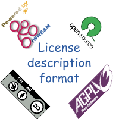

Interactive Web Workflow Enactor & Manager
(loading)

IWWE&M frontends API description
IWWE&M versioning description
IWWE&M code is under
license. Source code is available at
IWWE&M Trac server
.
Original IWWE&M concept, design and coding done by José María Fernández,
INB
(C) 2008-2009.
 license. Source code is available at IWWE&M Trac server.
license. Source code is available at IWWE&M Trac server.